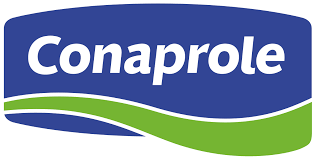
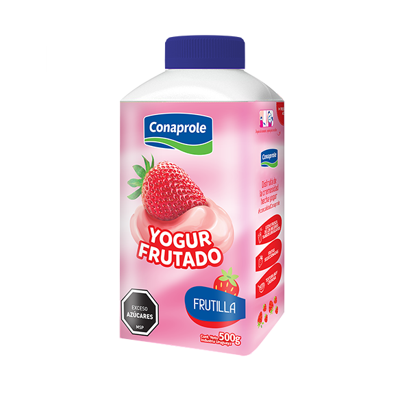
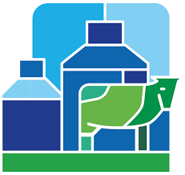

Cooperativa
Acerca De
Conaprole (Cooperativa Nacional de Productores de Leche)
Conaprole es una cooperativa uruguaya fundada en 1936. Se dedica a la producción y comercialización de productos lácteos como leche, queso, manteca y yogures. Es una de las empresas más importantes del país y exporta a varios mercados internacionales. Su trabajo apoya a miles de productores rurales y garantiza la calidad de los alimentos elaborados en Uruguay.
Cadena de Valor y Exportación
De Uruguay al Mundo
Nuestra logística y tecnología nos permiten procesar más de 1.000 millones de litros de leche al año, cumpliendo con los estándares internacionales más rigurosos. La cooperativa exporta sus productos a más de 50 países, siendo un motor clave para la economía uruguaya. La innovación constante en derivados lácteos y la eficiencia de la cadena de frío son nuestra prioridad.
Enviar Currículum

